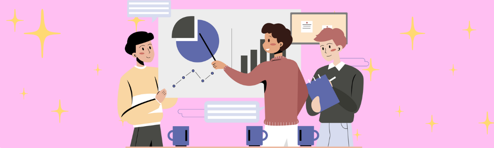

OUR WORKS
Every project we create tells a story, evokes emotions, and leaves a lasting impression. Our work reflects passion, precision, and purpose, crafted to engage, inspire, and connect with others.
From immersive experiences to subtle, emotive details, we shape resonant moods.
🌸 We support, inspire, and grow — together.